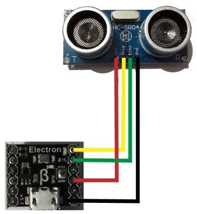

Version: 0.7.0
HC-SR04 is connected as followed on Electron:

| HC-SR04 | Mainboard |
|---|---|
| GND | GND |
| Echo | PA3 |
| trig | PA2 |
| Vcc | 3.3V (not working on 5V !) |
using System.Diagnostics;
using System.Threading;
using Bauland.Other;
namespace testTinyClrHCSR04
{
static class Program
{
static void Main()
{
Hcsr04 hcsr04 = new Hcsr04((0 * 16) + 2, (0 * 16) + 3)
{
// You can change linear coefficient to adjust measure, but it is not mandatory
A = 0.82f,
B = 2.10f
};
while (true)
{
Debug.WriteLine(hcsr04.ReadCentimeters() + " cm, " + hcsr04.ReadInches() + " in.");
Thread.Sleep(500);
}
}
}
}